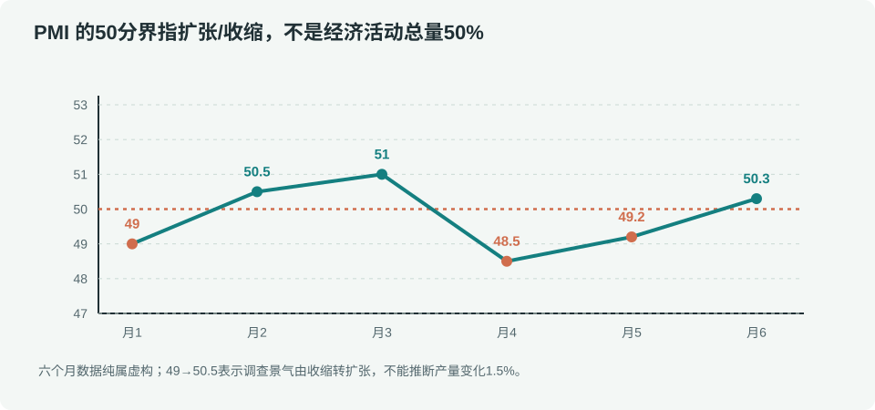
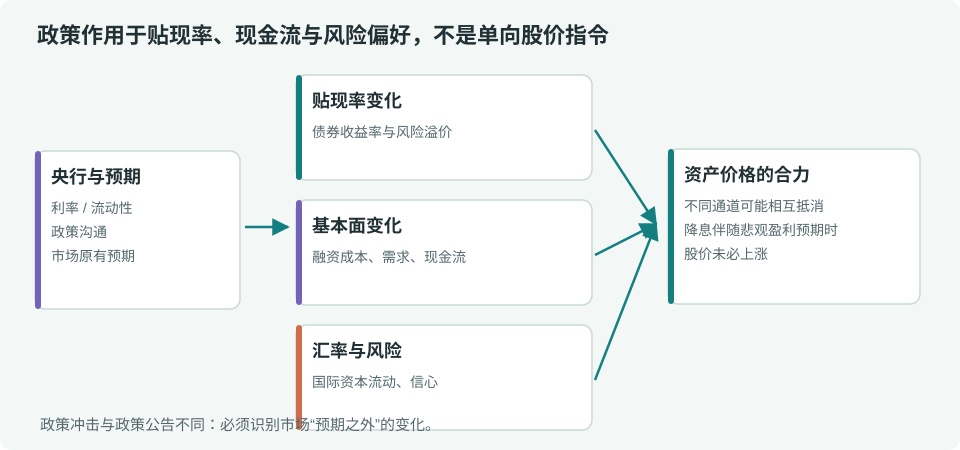
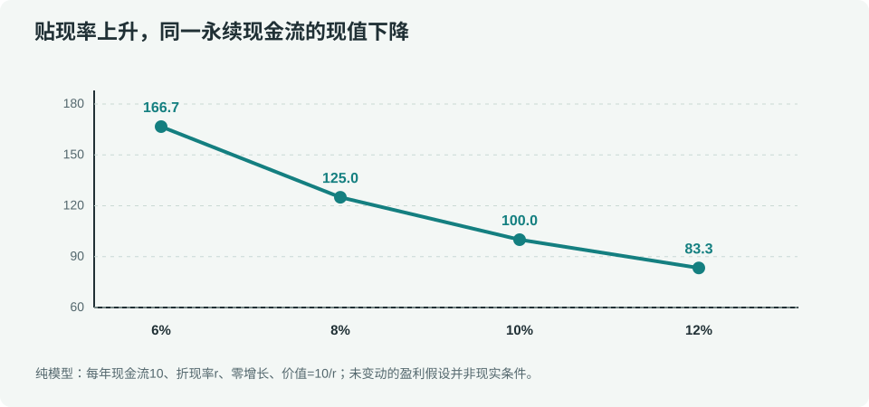

CHAPTER 06 · INVESTMENT ANALYSIS
宏观经济与证券价格：从数据到现金流
将宏观指标与政策变化连接到企业现金流、贴现率和市场预期，解释为什么利好不总对应上涨。
为什么宏观数据向好，股价仍会下跌？
假设一份调查指标由49升至51，但股票价格下跌。关键在于市场价格反映未来现金流与要求收益率，而市场投资者也会提前形成预期。一个数据即使比上月好，也可能不及交易之前的市场预期；风险溢价抬升可能盖过利润改善。观察值、预期差与市场反应是三个不同对象。
投资分析不能跳过中间机制：“数据变化 → 谁的销量或成本变化 → 现金流多少 → 风险与折现率 → 当前价格计入多少”。这是一条需要证据的链，而不是根据新闻标题发出买卖信号。
GDP、CPI、PMI：先读懂测量对象
GDP衡量期间最终生产活动的价值。按不变价衡量的实际GDP增速不同于名义GDP增速；CPI反映消费者购买的商品和服务价格篮子变化，不能直接表示企业利润。PMI由采购经理调查形成扩散指数，50是相对上月扩张或收缩的临界线，不是生产总量的百分数。

| 指标 | 核心问题 | 容易误判 |
|---|---|---|
| 实际GDP | 不变价格下产出变化 | 与名义增长混同 |
| CPI | 消费篮子价格变化 | 认为通胀升必然提高股价 |
| PMI | 调查显示总体扩张还是收缩 | 把49误读成49%的产量 |
| 债券收益率 | 资金时间价值、风险和期限溢价 | 与政策利率完全等同 |
同比与环比不能混用，宏观时间序列也可能经过季节调整和事后修订。历史策略必须使用当时可获得的版本，而不是回测时才知道的最新修订数。
货币政策的三条传导通道
央行利率及流动性工具影响债券收益率、融资与风险溢价；信用环境影响企业订单、利息成本与投资；汇率及政策沟通还会改变风险偏好。市场尤其关注政策与此前预期的意外偏差。IMF 2026年的跨国研究区分短期政策冲击与未来政策路径的意外信息。

同一降息对浮动利率借款者、净息差敏感的银行、进出口企业的影响各异。应检查贷款重定价时间、负债结构、汇率净敞口与对冲，而不是直接把政策方向映射成股价方向。
财政政策从预算到公司现金流有多个时滞
财政支出和税收通过总需求、生产能力及收入分配影响经济。但政策发布、预算安排、工程开工、企业中标、收入确认与收款是不同时间点。即使项目订单增加100单位，甲企业可以用闲置产能交付，乙企业却需新增设备与库存；两家公司自由现金流可能完全不同。
财政乘数受到经济周期、货币政策、进口泄漏与财政可持续性影响，没有所有环境通用的固定数值。研究时必须把总量刺激与微观企业订单的兑现概率分开。
贴现率为什么影响现值？
假设一种抽象资产每年支付10单位现金、永不增长且没有违约。要求收益率8%时现值125；如果只把贴现率换成10%，现值变成100。这是同一现金流折现的数学结果，不是股票指数将下跌20%的预测。

现实中降息或升息往往与增长、通胀、风险溢价一起变化，这会改变未来现金流。因此研究资产价格时应进行情景拆分，而不是只拿一条现值曲线断言市场方向。
信贷周期与库存周期要分辨主动与被动
库存上升可以是需求旺盛时的主动备货，也可以是销售弱于计划后的被动积压。需要结合订单、库存周转、成交价格、产能与营运资本判断。不同产业链的建设期、采购周期和融资结构不同，没有所有行业适用的固定“经济时钟”。
分析中最容易发生的错误，是将最后才披露的库存数据提前使用，或者在看到股价转折后才修改宏观阶段定义。可靠的策略研究应预先固定指标发布时间、阈值和交易规则，并报告样本外结果。
宏观传导案例：如何写可被反驳的研究假设
假设一家出口企业60%的有息借款为浮息、30%的收入来自海外，并有进口原材料。利率下调50基点、本币贬值3%并不自动等于利润利好：需要逐项核对重定价日、套期保值、海外订单、进口采购与合同币种。
| 假设路径 | 需要的证据 | 可能的反证 |
|---|---|---|
| 融资成本下降 | 贷款合同、利率重置和余额 | 贷款利率并未同步变化 |
| 汇率改善利润 | 净外汇敞口与对冲 | 海外需求或进口成本抵消 |
| 订单增加兑现现金 | 收入、库存、应收、经营现金流 | 订单取消或回款缓慢 |
| 消息带动股价 | 公告时点、市场预期 | 利好已计入原价 |
检验
- 为何PMI 49→50.5不等于GDP增长1.5%？
- 为何市场可能在降息当日下跌？
- 怎样避免宏观回测中的未来数据泄漏？
资料来源与适用范围
以下为核对概念的研究与官方资料。构造例子不可被视为投资收益预测；实际数据须核查公布时点与修订版本。